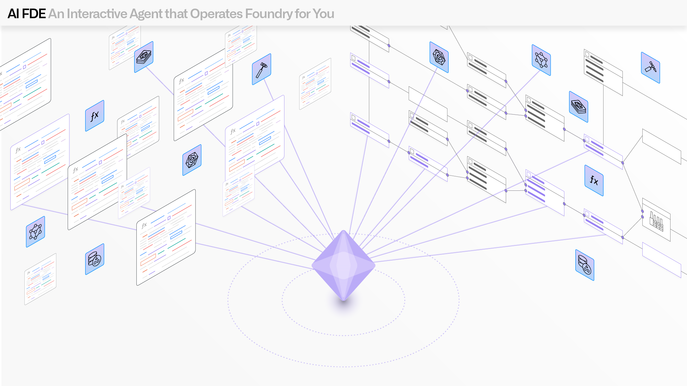

AI FDE, the AI-powered forward deployed engineer, is an interactive agent that operates Foundry for you through conversational commands. AI FDE translates natural language requests into Foundry operations, allowing you to perform data transformations, manage code repositories, build and maintain your ontology, and more. You can also provide AI FDE with context from Foundry to facilitate and inform operations.
AI FDE requires AIP to be enabled on your enrollment. It is also recommended that Global Branching be enabled to support Ontology edits from AI FDE. Contact your Palantir administrator to enable AIP and Global Branching for your enrollment.
When you provide a request in natural language, AI FDE takes the following steps:
All operations respect the userâs existing permissions, including application and data access. You can select the specific model to use, as well as the tools and data available to the model, so that AI FDE only has access to the capabilities necessary for the requested operation.
AI FDE can use tools that match the operations that users can perform in the platform, including creating object types, writing transforms, and running builds. The ability to use tools is essential for production systems that need to reliably interact with development tools, APIs, and infrastructure in real-world environments. AI FDE displays the tools used to perform actions in Foundry and keeps a record of all prompts and tools used during the active session in the chat outline.
AI FDE gives users complete authority and visibility over what information the model can access. In its initial state, AI FDE loads minimal context to provide the model with general knowledge of Foundry concepts without access to user data. This baseline configuration ensures the system starts with a clean state for each interaction. This controlled context approach prevents the "context pollution" that can occur when irrelevant information dilutes the effectiveness of the model's reasoning; by starting with a controlled baseline, AI FDE can maintain precise governance over the model's capabilities and knowledge boundaries.
Users can expand this context in multiple ways, including dragging and dropping folders, datasets, or documentation to provide relevant information. Learn more about context management.
AI FDE employs a closed-loop operation model, where the model executes an action, observes the result, and uses that feedback to determine its next action. This creates a continuous feedback loop where outputs from one operation become inputs for subsequent decisions, enabling complex multi-step workflows.
AI FDE can perform various actions to validate its own changes, including but not limited to:
AI FDE has access to several modes and capabilities that allow it to perform a broad range of operations. You can customize the tools available to AI FDE in the Tools menu under the request input field.
AI FDE is able to perform a variety of tasks based on natural language descriptions, including:
By default, AI FDE uses branching across all workflows. AI FDE will propose changes in a Global Branch proposal or Code Repository pull request for review.
To be used by AI FDE, a model must be enabled for your enrollment. AI FDE has first-class support for Anthropic, OpenAI, Google, and xAI models along with support for native tool APIs.
Note: AIP feature availability is subject to change and may differ between customers.